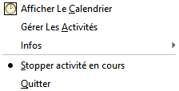
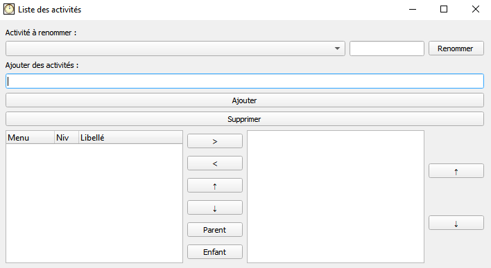
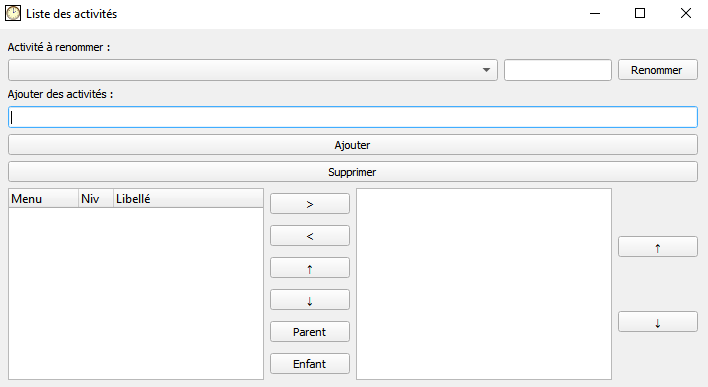
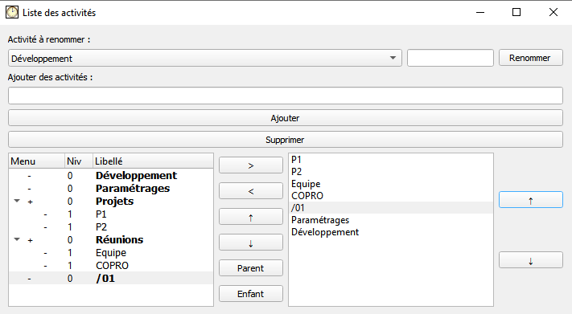
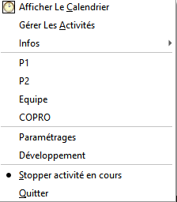
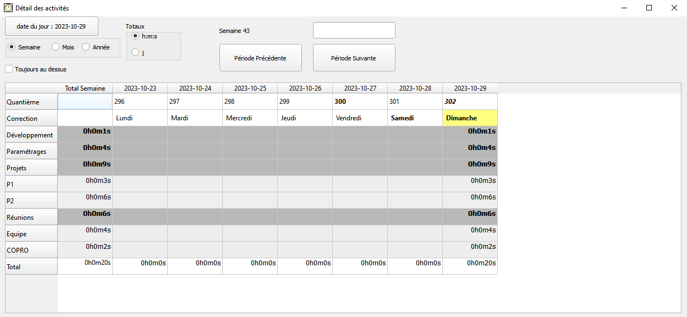
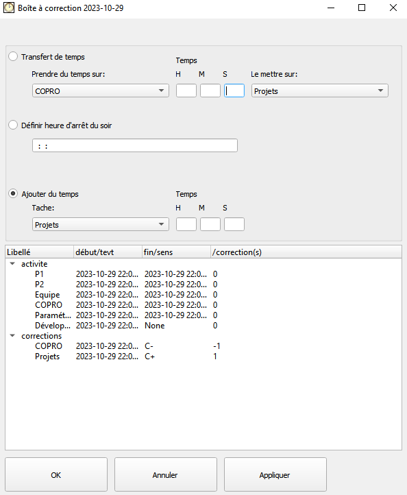
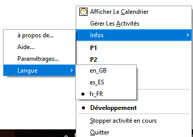
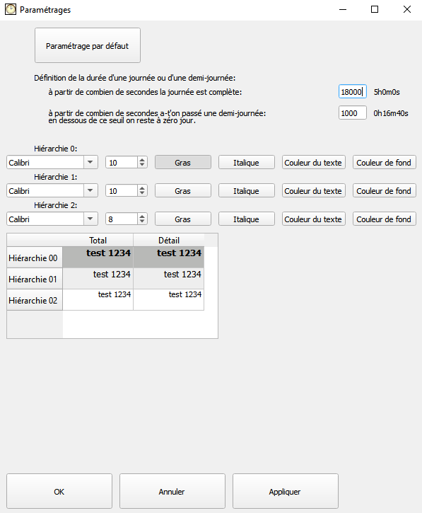

Alice
Table des matières
Démarrer/ arrêter une
activité
Introduction
Ce logiciel a pour but de chronométrer des activités en étant à la fois simple, toujours disponible et en restant discret quant à sa présence à l'écran.
Le récapitulatif du temps passé sur ces activités permet de mieux connaitre la répartition de notre temps.
Installation
Récupérer le zip ChronoActivite.zip.
Le dézipper quelque part sur son PC.
Dans le cas où c'est une mise à jour, veiller à bien conserver le fichier Alice.db de l'ancienne version pour la mettre dans le répertoire de la nouvelle version. En l'absence de ce fichier, au premier lancement du programme, un nouveau fichier Alice.db va être créé vierge de toute donnée.
Pour une mise à jour, il suffit de récupérer le dernier
fichier situé ici: /lib/library.zip
et de relancer alice.exe.
Lancer
Pour lancer l'application, double cliquer sur le fichier alice.exe et c'est tout.
Si vous avez Python et PyQt5 d'installés sur votre machine, le script Alice.py peut être lancé à la place, tout le reste ne vous sera d'aucune utilité. Vous pouvez le renommer en Alice.pyw pour éviter d'afficher une fenêtre noire d'invite de commande.
En bas à droite de l'écran l'icône suivante doit apparaître:
Astuce: sous Windows les icônes de la systray peuvent se cacher automatiquement. Il est possible de forcer certaines icônes à s'afficher sans jamais être masquées. Pour accéder au paramétrage Windows correspondant, cliquer sur le bouton démarrer (ou appuyer sur la touche Windows) et saisissez le texte "Sélectionner les icônes à afficher dans la barre des tâches".
Ajouter des activités
Un clic droit avec la souris sur cette icône permet de faire afficher le menu contextuel

Commencer par sélectionner "Gérer Les Activités", la boîte de dialogue suivante apparaît
 

Dans la zone 1 on saisit le nom d'une nouvelle activité, on la valide par la touche Entrée ou en cliquant sur le bouton Ajouter.
L'activité va alors apparaître dans la zone 2 qui contient la liste de toutes les activités recensées.
Avec les flèches gauche et droite (4) on peut mettre les activités dans la zone 3 qui représente l'ensemble des activités sélectionnables via le menu contextuel que l'on va voir plus bas.
L'ordre de ces activités dans le calendrier est modifiable avec les boutons haut et bas et un niveau hiérarchique peut être défini afin de définir des sous-taches avec les boutons Parent et Enfant.
L'ordre des activités dans le menu contextuel est modifiable avec les boutons haut et bas (5).
On peut supprimer une activité qui est dans la zone 2, à condition qu'elle ne soit pas présente dans la zone 3. Pour ce faire on la sélectionne et on clique sur le bouton supprimer. Cela ne va pas supprimer les activités déjà décomptées
On peut également renommer des activités existantes. Tout est renommé, l'historique des actions, le menu, les corrections. Si on renomme vers un nom déjà existant, une alerte est faite, si on valide tout de même, les deux activités vont alors fusionner en une seule en cumulant leurs historiques respectifs.
Si on crée une activité ayant pour nom un slash suivi de deux chiffres (exemple "/01") alors cela va générer un séparateur dans le menu contextuel.
Exemple:

Le menu contextuel correspondant:

Démarrer/ arrêter une activité
Il suffit de cliquer sur l'activité correspondante dans le menu contextuel pour la démarrer.
En démarrer une nouvelle arrête la précédente
Sélectionner l'option de menu "Stopper activité en cours" ou "Quitter" arrête l'activité en cours. Si l'activité en cours date d'un jour passé alors il faut passer par les corrections pour l'arrêter. Il n'est pas prévu d'avoir une activité qui court sur différents jours.
Visualiser
Sélectionner le menu "Afficher le calendrier" fait apparaître la fenêtre suivante:

On y voit récapitulé les activités et leur temps passé.
La ligne quantième affiche le jour dans l'année (de 1 à 365-366)
La ligne correction affiche les jours de la semaine, cliquer sur ces jours permet de corriger les temps enregistrés sur la journée correspondante. Le jour correspondant à aujourd'hui est affiché en jaune. Si une journée passée a une activité non terminée alors le jour s'affiche en rouge.
On peut afficher le calendrier à la semaine ou au mois
Les totaux peuvent être mis en heure/minute/seconde ou en jour. En jour, on considère qu'une journée complète c'est au-delà de 5 heures, en dessous c'est une demi-journée et en dessous de 1000 secondes, on considère que la journée n'a pas encore commencé.
"Toujours au-dessus" permet de conserver la fenêtre au-dessus des autres même lorsqu'elle n'est pas active, cela peut être pratique lors de la saisie du CRA.
La case saisissable au-dessus du bouton "Période Suivante" permet de saisir une date sous différents formats pour y accéder rapidement. Une aide à la saisie s'affiche si on passe la souris au-dessus de la zone de saisie.
Corriger
Cliquer sur le jour que l'on veut corriger dans le calendrier fait apparaître cette boîte de dialogue:

On peut transférer un certain nombre de minutes d'une activité à l'autre
Arrêter la dernière activité à une heure donnée si on a oublié d'arrêter le compteur un jour précédent
Ajouter des minutes à une activité. Si besoin, cet ajout peut être négatif. Si on ajoute une durée de +1h et -1min alors c'est équivament à ajouter +59min

On peut changer la langue d'affichage

Le menu de paramétrage permet de modifier les paramètres par défaut de calcul d'une demi-journée ou d'une journée complète. On peut également modifier l'affichage du calendrier suivant les niveaux hiérarchiques de chaque activité. Un exemple de tableau permet de visualiser immédiatement le résultat des paramétrages appliqués